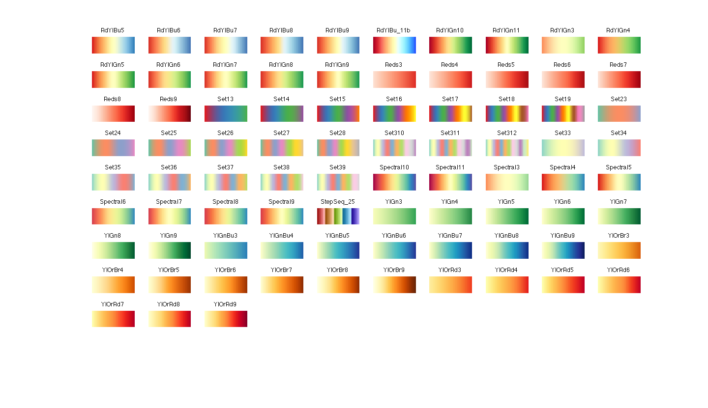

Introduction
For figure plot, I find a very good open source toolbox Gramm on MATLAB.
Gramm is a powerful plotting toolbox which allows to quickly create complex, publication-quality figures in MATLAB, and is inspired by R’s ggplot2 library. As a reference to this inspiration, Gramm stands for GRAMmar of graphics for MATLAB.
USE CASES AND EXAMPLE SCREENSHOTS ON THE GITHUB README:
I integrate Gramm to my plot object Rplot, and I also add many other features and functions to it.
Other plot
Radar plot
With Rplot, we can plot radar figure. Using function set_axe_options to set the zero location.
z=14; |

We can also draw radar figure with other type plot.
Other colormap
Gramm shows a figure with different colormaps:
I also add many other colormaps.(All the colormaps are from here: othercolor)
‘othermap’ does not support the lightness
load example_data; %#ok<LOAD> |


Drawing annotation options
I add drawing annotation options to Rplot. Add labels to points and lines.
 |
 |
Reference
[1] Morel, (2018). Gramm: grammar of graphics plotting in MATLAB. Journal of Open Source Software, 3(23), 568,
https://doi.org/10.21105/joss.00568
[2] Joshua Atkins (2023). othercolor (https://www.mathworks.com/matlabcentral/fileexchange/30564-othercolor), MATLAB Central File Exchange. Retrieved September 4, 2023.